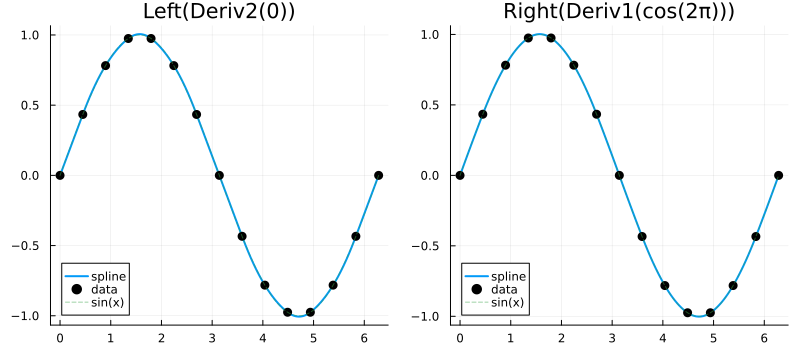
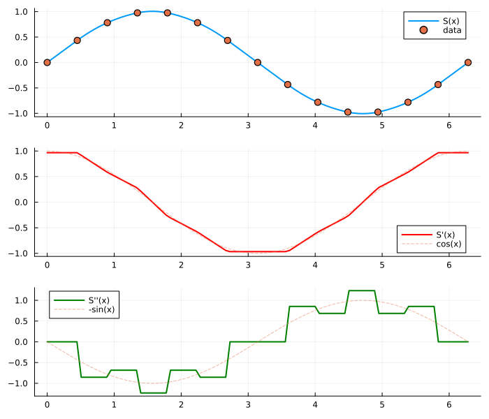

Quadratic Interpolation
Quadratic (C1) spline interpolation provides smooth curves with continuous first derivatives. Unlike cubic splines, quadratic splines require only one boundary condition at either endpoint.
Basic Usage
using FastInterpolations
using Plots
# Sample data
x = range(0.0, 2π, 15)
y = sin.(x)
# Interpolate at a single point
result = quadratic_interp(x, y, 1.5)
println("quadratic_interp(x, y, 1.5) = ", round(result, digits=4))quadratic_interp(x, y, 1.5) = 1.0029# Interpolate at multiple points
xq = [0.5, 1.0, 1.5, 2.0]
results = quadratic_interp(x, y, xq)
println("Results: ", round.(results, digits=4))Results: [0.4823, 0.838, 1.0029, 0.9039]Boundary Conditions
Quadratic splines have one degree of freedom, so you specify a condition at only one endpoint:
| BC | Description |
|---|---|
Left(Deriv1(v)) | First derivative = v at left endpoint |
Left(Deriv2(v)) | Second derivative = v at left endpoint |
Right(Deriv1(v)) | First derivative = v at right endpoint |
Right(Deriv2(v)) | Second derivative = v at right endpoint |
Default: Left(Deriv2(0)) — makes the first interval linear.
xq = range(x[1], x[end], 200)
p = plot(layout=(1,2), size=(800, 350), legend=:bottomleft)
# Compare different boundary conditions
for (i, bc) in enumerate([Left(Deriv2(0.0)), Right(Deriv1(cos(2π)))])
yq = quadratic_interp(x, y, xq; bc=bc)
label = i == 1 ? "Left(Deriv2(0))" : "Right(Deriv1(cos(2π)))"
plot!(p[i], xq, yq, label="spline", linewidth=2)
scatter!(p[i], x, y, label="data", markersize=5, color=:black)
plot!(p[i], xq, sin.(xq), label="sin(x)", linestyle=:dash, alpha=0.5)
title!(p[i], label)
end
p
If you know the derivative at one endpoint (e.g., from physics), use Deriv1. Otherwise, Left(Deriv2(0)) is a safe default that produces a linear first segment.
In-Place Interpolation
For zero-allocation hot paths:
out = zeros(4)
quadratic_interp!(out, x, y, xq[1:4])
println("In-place results: ", round.(out, digits=4))In-place results: [0.0, 0.0305, 0.061, 0.0916]Reusable Interpolant
When both x and y are fixed:
# Create interpolant once
itp = quadratic_interp(x, y)
# Evaluate multiple times (zero-allocation)
result1 = itp(1.0)
result2 = itp(2.0)
println("itp(1.0) = ", round(result1, digits=4))
println("itp(2.0) = ", round(result2, digits=4))itp(1.0) = 0.838
itp(2.0) = 0.9039Derivatives
Evaluate analytical first and second derivatives:
# One-shot with deriv keyword
d1 = quadratic_interp(x, y, 1.0; deriv=1) # First derivative
d2 = quadratic_interp(x, y, 1.0; deriv=2) # Second derivative (constant per interval)
println("First derivative at x=1: ", round(d1, digits=4))
println("Second derivative at x=1: ", round(d2, digits=4))First derivative at x=1: 0.5137
Second derivative at x=1: -0.6843# Derivative views from interpolant
itp = quadratic_interp(x, y)
d1_view = deriv1(itp)
d2_view = deriv2(itp)
xq_dense = range(0.0, 2π, 100)
p = plot(layout=(3,1), size=(700, 600))
plot!(p[1], xq_dense, itp.(xq_dense), label="S(x)", linewidth=2)
scatter!(p[1], x, y, label="data", markersize=5)
plot!(p[2], xq_dense, d1_view.(xq_dense), label="S'(x)", linewidth=2, color=:red)
plot!(p[2], xq_dense, cos.(xq_dense), label="cos(x)", linestyle=:dash, alpha=0.5)
plot!(p[3], xq_dense, d2_view.(xq_dense), label="S''(x)", linewidth=2, color=:green)
plot!(p[3], xq_dense, -sin.(xq_dense), label="-sin(x)", linestyle=:dash, alpha=0.5)
p
When to Use Quadratic Interpolation
Choose quadratic interpolation when:
- C1 continuity (smooth first derivative) is sufficient
- You have a known derivative at one endpoint
- Slightly simpler than cubic is acceptable
Consider cubic when:
- C2 continuity (smooth curvature) is required
- You need conditions at both endpoints
- Data represents smooth physical quantities
Consider linear when:
- Speed is critical and smoothness is not required
- Monotonicity must be preserved
See Also
- Cubic Overview: C2 continuous splines with two-endpoint BCs
- Derivatives: Working with derivative views
- Extrapolation: Control behavior outside the data domain